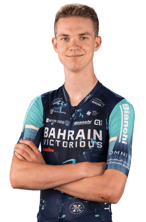

Jakob Omrzel
Datos personales
- Jakob Omrzel
- 21/03/2006
- Eslovenia
- BAHRAIN VICTORIOUS
- 76

Datos equipos
- Bahrain Victorious
- Bahrain Victorious Development Team
- Adria Mobil Juniors
Temporada 2025
| Nombre del Datos | Resultado |
|---|---|
| Nacional Eslov ruta | 2º puesto |
| Nacional Eslov contrarreloj | 3º puesto |
| Alps Tour, 5ª etapa | 5º puesto |
| Alps Tour, clasif general | 6º puesto |
| Alps Tour, 4ª etapa | 8º puesto |
| Eslov Tour, 5ª etapa | 9º puesto |
Multimedia
Equipo BAHRAIN VICTORIOUS en la Vuelta Ciclista a España 2026.